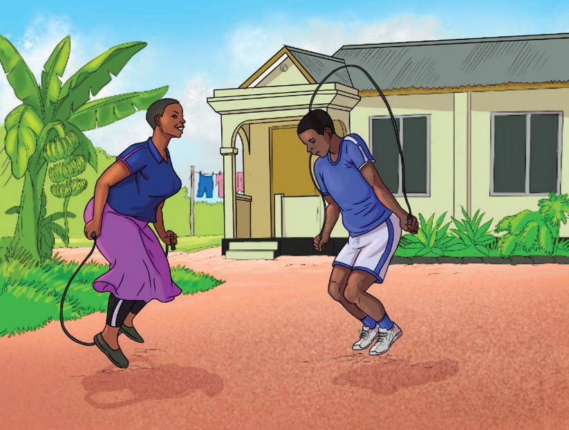
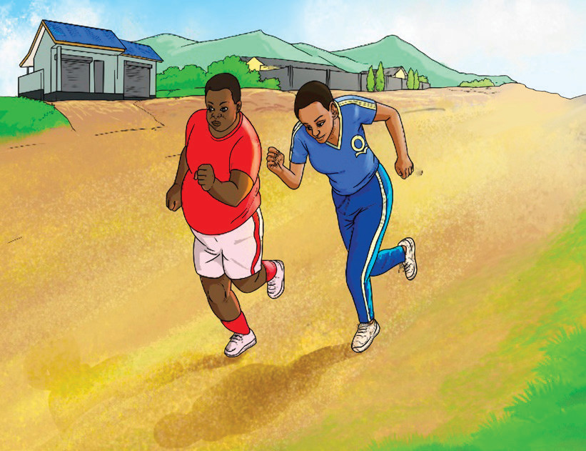

A balanced meal with various vitamins and minerals supports the immune system, making the body more resilient to infections and illnesses. Performing regular physical activities is also associated with enhanced immune system functions.
A balanced meal and physical activity have a great impact on mental health. Nutrient-rich foods and regular physical activity reduces depression and anxiety risk, improve mood and boost cognitive function.
Proper nutrition and regular physical activities can prevent or manage non-communicable diseases such as type 2 diabetes and some cancers. A healthy lifestyle lowers the risk of developing these conditions.
A balanced meal and regular physical activity improve sleep. They promote better sleep patterns, thus benefiting the overall physical health.
A healthy lifestyle with balanced meals and physical activity is linked to longer life and reduce the risk of premature death. Figure 7.1 shows people performing physical activities by skipping rope and running and Figure 7.2 shows people performing physical activities through home gardening

